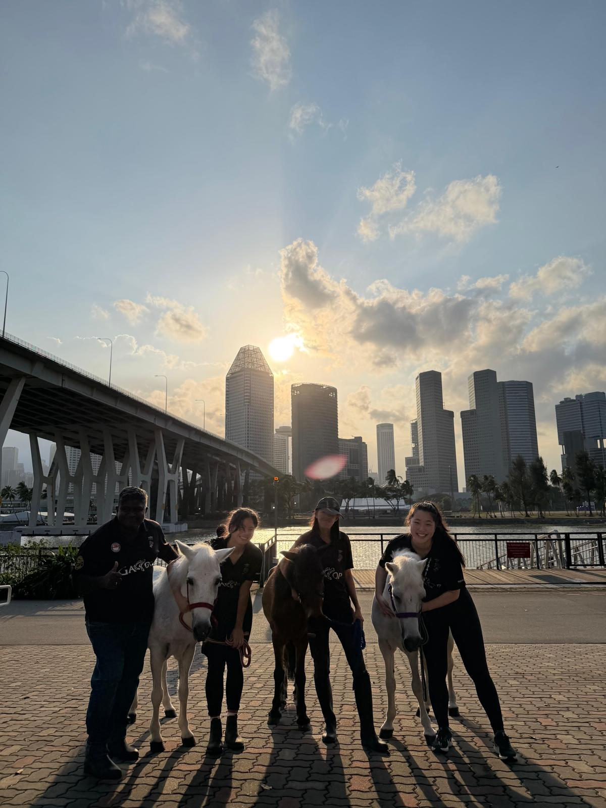

Gallop Cares
Give a second chance and be a part of their story
Our Adopt a Horse program lets you sponsor one of our rescued horses, helping to fund their care, food and medical needs. As a sponsor, you will receive updates, photos and opportunities to visit, building a real bond with a horse whose story continues because of you. It's not just a donation, it's a shared life.
A meaningful connection
Give care beyond the racetrack
Many Gallop Stable residents are former racehorses retrained for a gentler life. Adoption support helps us continue providing food, shelter, daily care and attention for horses at every stage of their journey.
- Support the everyday care of a Gallop Stable horse
- Help rescued and retired horses enjoy a secure home
- Receive updates and learn more about your chosen horse
- Build a lasting connection with the Gallop Stable community
How it helps
Your support makes a real difference
Daily wellbeing
Support contributes to feed, grooming, stable care and the daily needs of the horse.
A secure home
Horses unable to take part in riding activities can still enjoy comfort, pasture and attentive care.
Second chances
Your involvement helps Gallop Stable continue welcoming horses that need a new purpose and home.